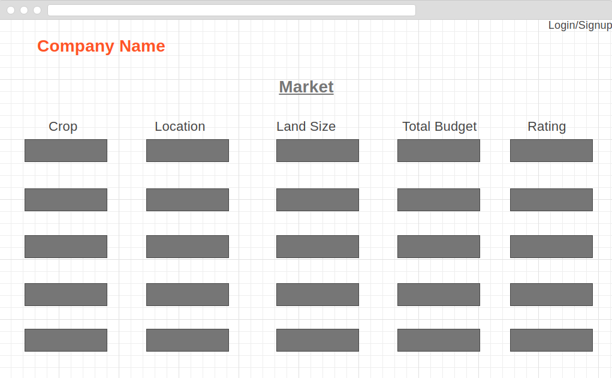
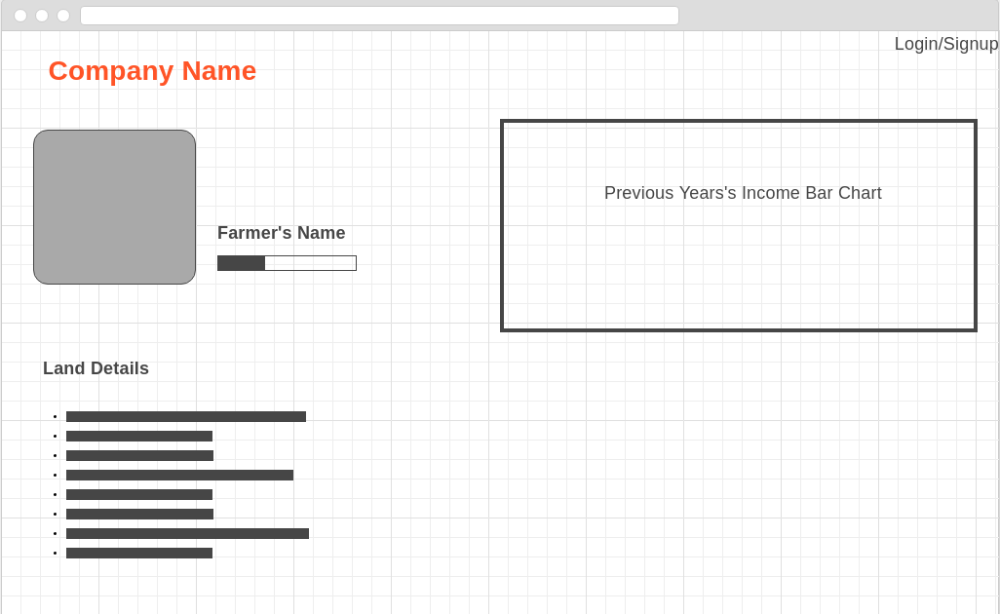

Table of Contents
- Introduction
- Architecture
- Component Design Specification(s)
- User interface issues
- Execution Architecture
- Design decisions and tradeoffs
- Introduction
- Purpose of this document
- Scope of the development project
- Definitions, acronyms, and abbreviations
- References
- Overview of document
{Full description of the main objectives of the SDS document.}
{This will be similar to what was written in the SRS.}
{Be sure to alphabetize!}
{ This section will include technical books and documents related to design issues. Be certain that the references you give are complete and in the appropriate format.}
{A short description of how the rest of the SDS is organized and what can be found in the rest of the document. This is not simply a table of contents. Motivate and briefly describe the various parts!}
- Architecture
- Component Design Specification(s)
User interface issues
Execution Architecture
- Design decisions and tradeoffs
{High level system design, showing structure, dependency and interaction between components.}
{Include design of each component here. Use text and appropriate diagrams to clearly demonstrate the design of each component.}
A Software Requirements and Specification(SRS) file is uploaded as an html file which allows users to look up different parts of the software as well as get more sources for information
Investor-Profile

Here user can see all inversters infomation, contacts no and their history and their investment shares
Land-Profile

Here User can see all land information, location, environment, soil information. Here user can see the farmers information.
Login-Signup

Here User can login with their user name and password then after login successfully user can access below page freedomly
1. Investor-Profile2. Land-Profile
3. Market
4. Profile
Market
Profile
As soon as the program starts the execution time starts.Here we will have several queries like the user needs to register/log in,search for details about the land,book land etc
User log in: Here the User can create their own account.
Search for details: Here the user can search about a land ,which will be suitable for cultivation.
Book Land: Here the user will buy a suitable share of land based on their ability.
All typs of information will be saved in our database so that the next time the user log in to the database ,they get the similiar suggestion and donot need to put their information over and over again.
{Use this section to motivate any decisions that will help the reader understand the design that your team is using. This section can also capture good ideas that were abandoned and the reasons for leaving them out of the design.}
Appendix A:
{}
Appendix B:
{}
Appendix C:
{}